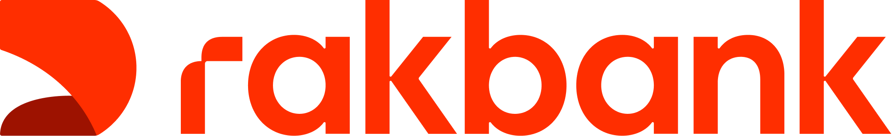
Why CLM matters to the bank
The strategy pitch I gave to the R&D leadership team in 2026. It shows that CLM is more than a compliance tool: it's where the bank keeps a record of every customer decision.
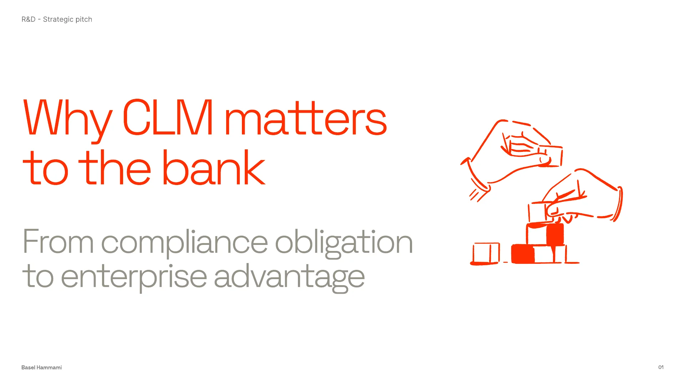
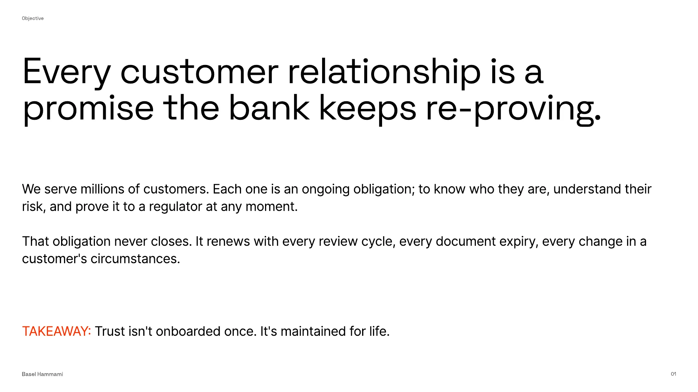
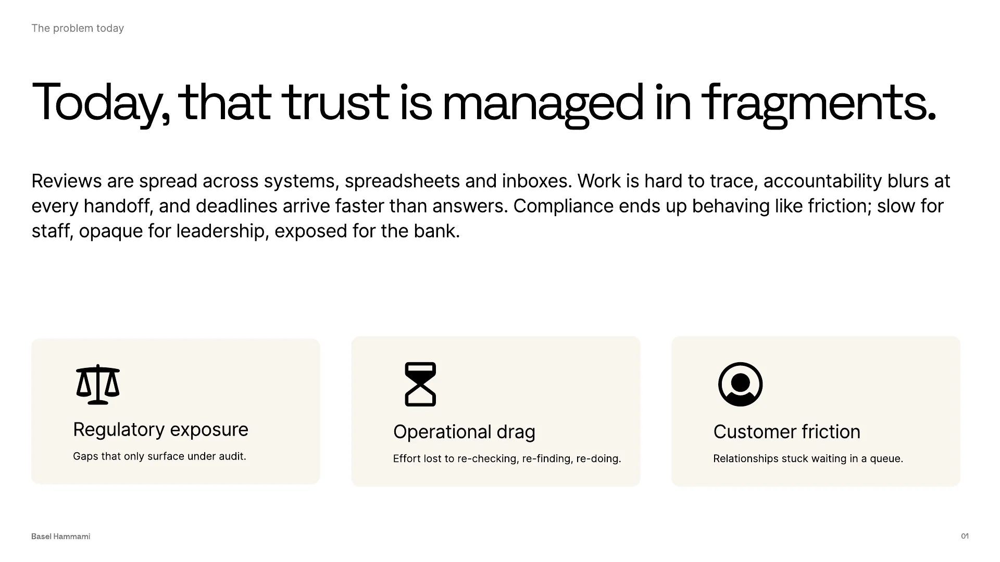
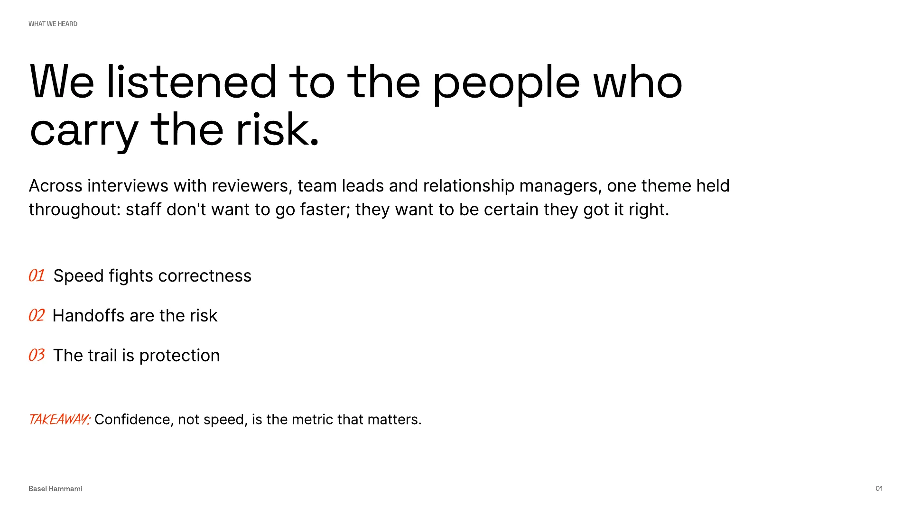
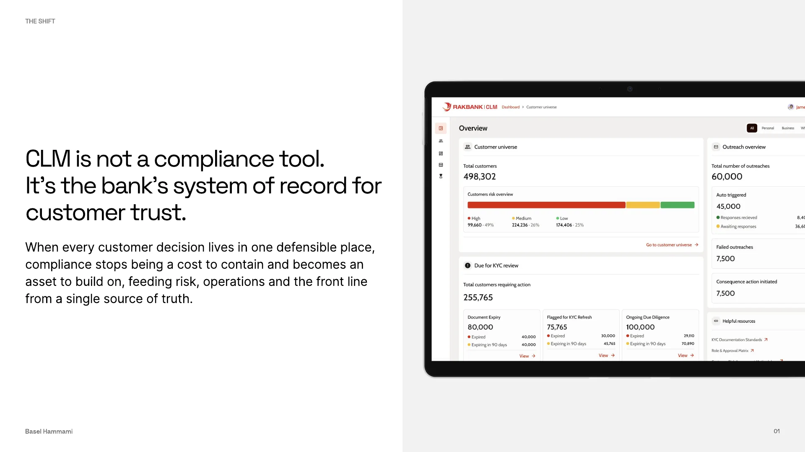
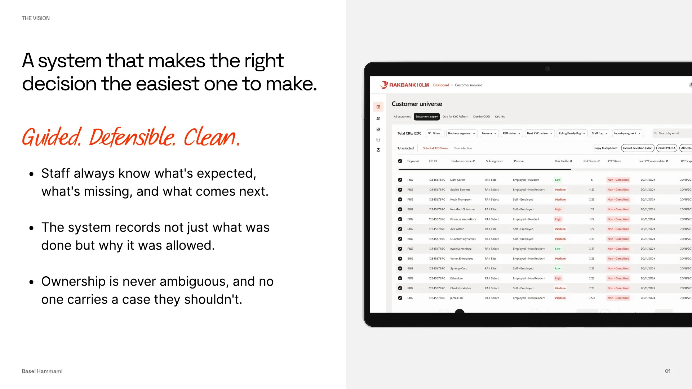
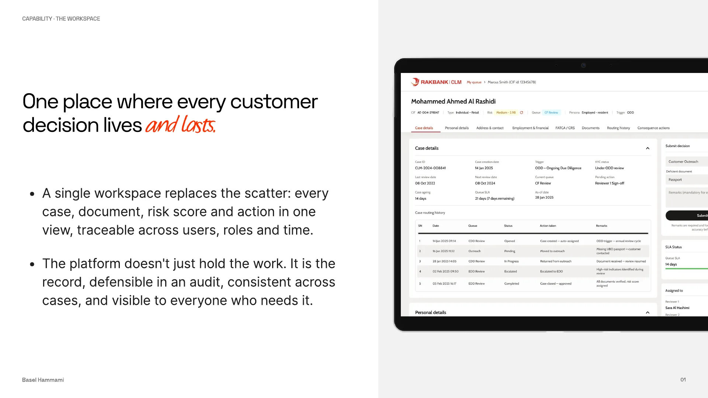
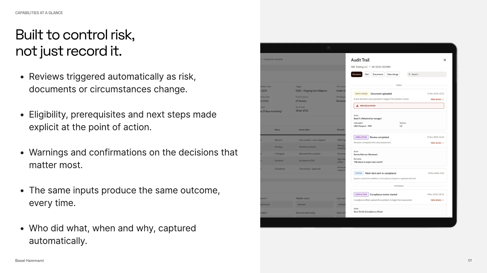
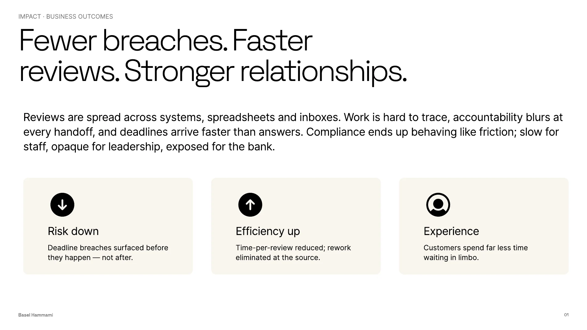
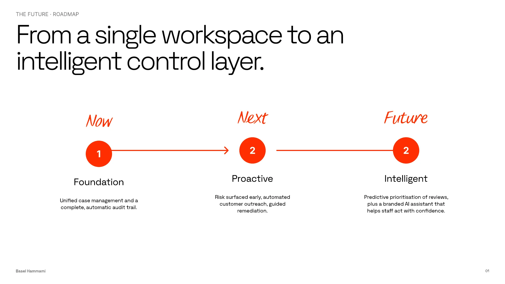
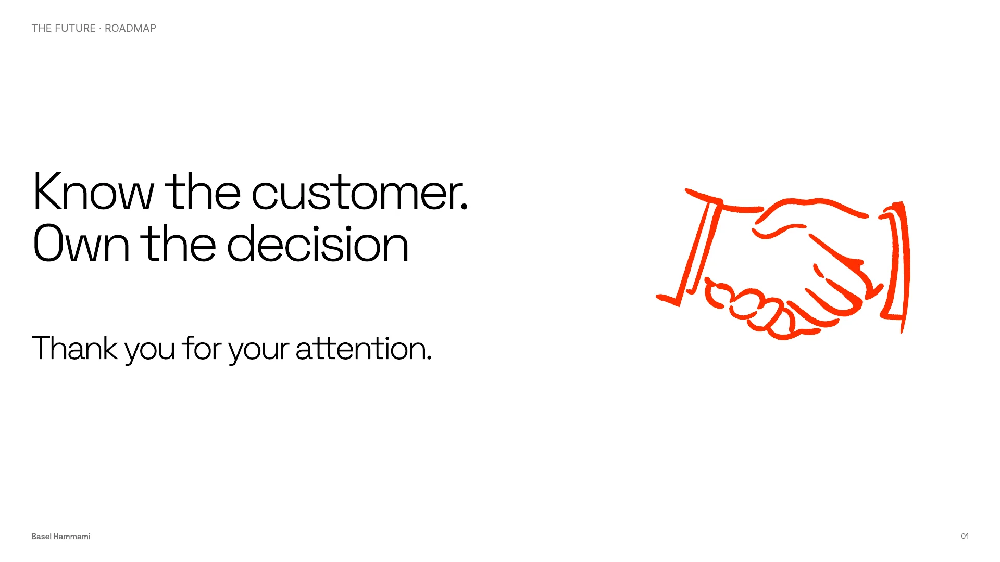
See how it was built
The case study goes deep on the audit trail, the part of CLM that makes every decision provable.
Read the case study